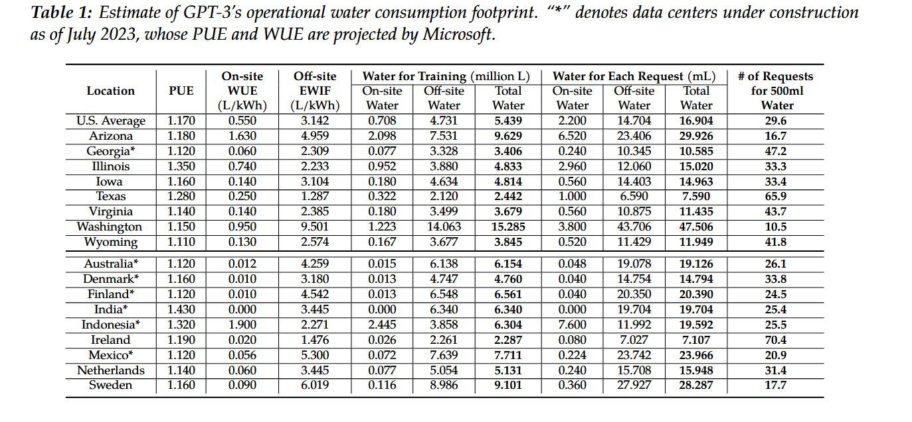

Impact Écologique de l'Intelligence Artificielle
(Énergie, Eau, Émissions & Tendances 2000–2024)
🔎 1. Contexte général
Les data centers constituent l’infrastructure physique essentielle au numérique contemporain — cloud, stockage, services web et surtout entraînement/exécution des modèles d’IA.
Leur impact environnemental croît rapidement, notamment du fait de :
- la demande en calcul (GPU/TPU) pour l’IA,
- la prolifération des services cloud,
- l’augmentation du volume des données,
- la densification du matériel.
⚡ 2. Consommation d’énergie (électricité)
🔢 Chiffres clés 2024
- ≈ 415 TWh/an : consommation électrique mondiale des data centers en 2024.
- Équivalent : ≈ la consommation annuelle d’un pays comme la France.
- Poids global : 1,5 % de la consommation électrique mondiale.
- Aux États-Unis : ≈ 183 TWh/an, soit >4 % de la consommation du pays.
🔄 Évolution 2000 → 2024 (tendance indicative)
| Année | Consommation estimée | Commentaire |
|---|---|---|
| 2000 | ~120 TWh/an | Début du cloud, faible densité |
| 2010 | ~200 TWh/an | Explosion web, streaming |
| 2020 | ~330 TWh/an | Big data, cloud hyperscale |
| 2024 | ~415 TWh/an | Montée IA + GPU intensifs |
La croissance est exponentielle depuis 20 ans, malgré des gains d’efficacité (PUE).
💧 3. Consommation d’eau (refroidissement)
🔢 Chiffres clés
- Un data center peut consommer jusqu’à 416 000 m³/an.
- Les plus grands « hyperscale » peuvent employer ≈ 22 000 m³ /jour
C'est l'équivalent à la consommation d’une petite ville (10–50k habitants). - WUE (Water Usage Effectiveness) moyenne : ≈ 1,8–2 L/kWh.
🌡️ Pourquoi autant d’eau ?
- Refroidissement évaporatif (les plus gourmands en eau).
- Maintien de température stable pour les GPU/CPU.
- Climats chauds = consommation encore plus élevée.
📉 Évolution qualitative 2000 → 2024
| Année | Eau utilisée (estimation globale) | Tendance |
|---|---|---|
| 2000 | ~150 millions m³/an | Premiers grands data centers |
| 2010 | ~220 millions m³/an | Montée du cloud |
| 2020 | ~320 millions m³/an | Explosion du streaming + IA |
| 2024 | ~400 millions m³/an | Hyperscale + entraînement IA |
⚠️ L’historique exact est difficile à établir :
- peu de reporting avant 2015,
- technologies de refroidissement très variées,
- absence d’obligation de transparence.
🌍 4. Émissions de CO₂ (électricité + refroidissement)
Chiffres clés 2024
- ≈ 180 Mt CO₂/an liés à l’électricité des data centers.
- Forte variabilité selon le mix énergétique local.
📈 5. Scénarios d’évolution (2030–2035)
| Période | Énergie | Émissions CO₂ | Notes |
|---|---|---|---|
| 2024 (réf.) | 415 TWh | 180 Mt | situation actuelle |
| 2030 – Base Case | ~945 TWh | ~300 Mt | demande IA modérée |
| 2035 – Croissance IA rapide | ~1 700 TWh | ~500 Mt | mix fossile + explosion IA |
🧠 6. Facteurs clés de l’impact IA
▪ Calcul intensif (GPU/TPU)
- Accélérateurs consommant 300–700 W par unité.
- Clusters IA = plusieurs MW continus.
▪ Explosion des données
- Stockage comptant pour 10–20 % de la consommation des DC.
▪ Refroidissement
- Peut représenter jusqu’à 40 % de la consommation totale.
▪ Fabrication du matériel
- Impacts souvent ignorés dans les bilans carbone.
- Métaux critiques : cuivre, cobalt, terres rares, aluminium.
📉 7. Tendances & améliorations possibles
Déjà en déploiement :
- Free cooling (air extérieur).
- Refroidissement liquide ou immersion.
- Boucles fermées réduisant le prélèvement d’eau.
- IA pour optimiser la gestion énergétique. Pour aller plus loin
Limites actuelles :
- Le besoin en calcul augmente plus vite que les gains d’efficacité.
- Les zones chaudes / sèches subissent une pression hydrique.
- Concentration géographique → vulnérabilité environnementale locale.
8. Consommation de Chat GPT 3
Le PUE indique quel est le ratio entre l'énergie totale consommée par l'ensemble du centre d'exploitation (avec entre autres, le refroidissement, le traitement d'air, les UPS (onduleurs)...) et la partie qui est effectivement consommée par les systèmes informatiques que ce centre exploite (serveurs, stockage, réseau) source wikipedia 
A retenir le nom de Sasha Luccioni qui a réalisé une des études les plus sérieuses quand à la consommation des IA. Elle a notamment comparé différents usages de l'IA et leur coût énergetique avec la charge d'un smartphone. Générer 1000 textes avec un petit modèle correspond à 16% de la charge d'un smartphone mais générer une image de haute qualité peut couter l'équivalent d'une charge de smartphones. Et pour l'impact écologique , tout dépend comment est produit l'énergie...Une belle carte pour voir qui est responable et qui ne l'est pas
🧭 9. Conclusion
Les data centers et l’IA ont une empreinte écologique croissante, tant en énergie qu’en eau.
Même si des progrès technologiques existent, la demande en calcul IA augmente plus vite que l’efficacité, ce qui risque de renforcer :
- la consommation électrique,
- les besoins en eau,
- les émissions de CO₂,
- la pression sur les territoires.
Une stratégie durable nécessite :
- une transition massive vers les renouvelables,
- l’optimisation du refroidissement,
- une transparence accrue sur l’eau et l’énergie,
- des choix de conception IA plus sobres.